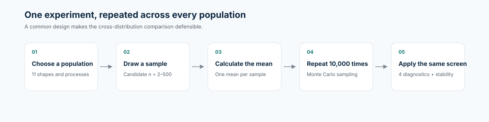
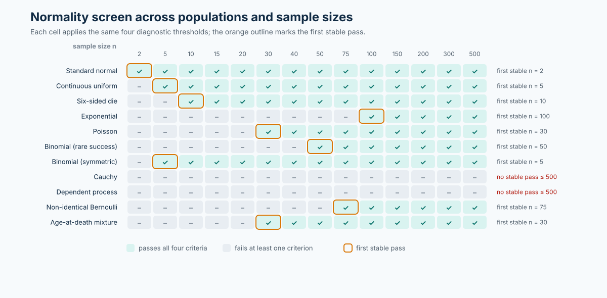
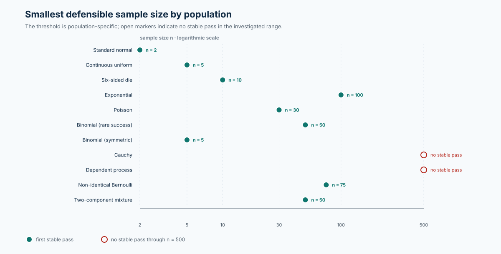

Stress-Testing the Central Limit Theorem
A Reproducible Monte Carlo Study of When Sample Means Become Approximately Normal
What is the smallest sample size at which the sampling distribution of a sample mean is reasonably defensible as approximately normal?
This project treats that question as an empirical modeling problem. It applies one transparent decision rule across 11 populations, tests the result with numerical and graphical evidence, and documents where the usual CLT intuition breaks down.
The headline finding: there is no universal “n = 30” switch. The defensible threshold depends on population shape, dependence, tails, and the standard used to define “approximately normal.”
11populations and processes compared
10,000Monte Carlo means per candidate n
4pre-specified normality diagnostics
2–500candidate sample sizes investigated
1 Visual evidence
How the experiment works
One common simulation design is applied across every population and process.

Where the normality screen passes
Green cells pass all four criteria; the orange outline identifies the first stable pass on the candidate grid.

Smallest defensible threshold
The result is a population-specific threshold, not a universal n equals 30 rule.

2 The result in one minute
The same diagnostic screen produced thresholds from n = 2 for a standard normal population to n = 100 for an exponential population. The Cauchy and dependent-process cases did not meet the stability rule through n = 500. This range is the central result: sample size alone is not enough to justify a normal approximation.
| Population | First stable pass | Evidence at the selected threshold |
|---|---|---|
| Standard normal | n = 2 | Normality is preserved exactly under averaging. |
| Continuous uniform | n = 5 | Symmetry supports fast convergence. |
| Six-sided die | n = 10 | Discreteness smooths through averaging. |
| Poisson(1) | n = 30 | Skewness ≈ 0.142; Q-Q correlation ≈ 0.998. |
| Exponential(1) | n = 100 | Skewness falls to ≈ 0.189; at n = 30, it is ≈ 0.398. |
| Cauchy | None through 500 | Skewness ≈ 87.46 and excess kurtosis ≈ 8213.51 at n = 500. |
For the full comparison—including rare-success binomial, mixture, non-identical Bernoulli, and dependent-process results—see the final summary.
3 What this project demonstrates
3.1 Experimental design
Each population is evaluated on the same candidate-n grid with B = 10,000 simulated sample means per candidate. The seed is reset before each experiment so every result can be reproduced independently.
3.2 Evidence-based judgment
“Approximately normal” is operationalized with skewness, excess kurtosis, normal Q-Q correlation, and standardized Q-Q RMSE. A threshold must pass at three consecutive candidate sizes.
3.3 Assumption awareness
The study deliberately includes skewed, discrete, heavy-tailed, dependent, non-identical, and mixture populations to test the limits of a rule-of-thumb rather than merely confirm it.
4 Research question
What is the smallest sample size at which the sampling distribution of the sample mean is reasonably defensible as approximately normal?
There is no universal answer because “approximately normal” is not a binary population property. It depends on the population being averaged, the diagnostic thresholds, the candidate sample sizes, Monte Carlo variation, and whether the assumptions supporting the CLT are credible.
The professional answer is therefore population-specific: choose the smallest sample size whose numerical and graphical evidence meets a clearly stated standard. This project makes that judgment explicit rather than hiding it behind a single rule of thumb.
5 Explore the work
- Start with the final summary for the cross-distribution comparison and limitations.
- Open the individual analyses to inspect each population’s prediction, diagnostics, plots, and conclusion.
- Review
R/helpers.Rfor the shared simulation and decision-rule implementation. - Read the AI log for the prompt record, validation steps, revisions, and remaining modeling assumptions.
6 Reproducibility
The project uses base R and a recorded student seed. Replace student_id <- 6599L in the analysis files and R/run_all.R with the last four digits of the intended student ID, then render from the repository root:
quarto render --no-clean --cache-refreshThe generated website is in docs/. The extra Quarto flags avoid the output-directory cleanup/move issue documented in the project README.